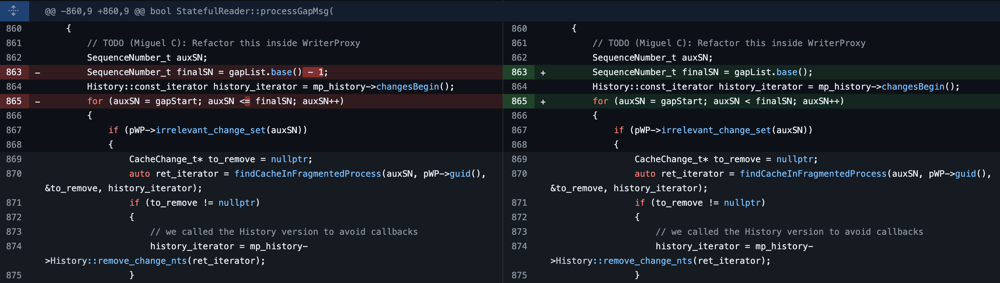

近期工作项目中涉及到DDS协议，和导师一起整理Fast DDS和OpenDDS的相关漏洞，用于后续学习和工作。
漏洞来源：
https://github.com/eProsima/Fast-DDS/security
https://github.com/OpenDDS/OpenDDS/security
GAP子消息格式错误触发断言失败 漏洞描述 格式错误的 GAP 子消息可能会触发断言失败，从而导致 FastDDS 崩溃。
影响版本：2.9.1
修复版本：>= 2.10.0 / 2.9.2 / 2.6.5
漏洞详情 触发崩溃的子消息：
1 2 3 4 5 6 7 8 9 submessageId: GAP (0x08 ) Flags: 0x01 , Endianness bit octetsToNextHeader: 28 readerEntityId: ENTITYID_UNKNOWN (0x00000000 ) writerEntityId: ENTITYID_P2P_BUILTIN_PARTICIPANT_MESSAGE_WRITER (0x000200c2 ) gapStart: 223692704932764539 gapList bitmapBase: 0 numBits: 0
漏洞代码：
在处理GAP子消息的代码中，使用CDRMessage::readSequenceNumberSet()函数从msg中读取gapList信息，并传递给processGapMsg()处理，StatefulReader继承RTPSReader：
1 2 3 4 5 6 7 8 9 10 11 12 13 14 15 16 17 18 19 20 21 22 23 24 25 26 27 28 29 30 31 bool MessageReceiver::proc_Submsg_Gap ( CDRMessage_t* msg, SubmessageHeader_t* smh, bool was_decoded) const ··· SequenceNumber_t gapStart; CDRMessage::readSequenceNumber (msg, &gapStart); SequenceNumberSet_t gapList = CDRMessage::readSequenceNumberSet (msg); if (gapStart <= SequenceNumber_t (0 , 0 )) { return false ; } findAllReaders (readerGUID.entityId, [was_decoded, &writerGUID, &gapStart, &gapList, this ](RTPSReader* reader) { static_cast <void >(was_decoded); #if HAVE_SECURITY if (was_decoded || !reader->getAttributes ().security_attributes ().is_submessage_protected) #endif { reader->processGapMsg (writerGUID, gapStart, gapList, source_vendor_id_); } }); return true ; }
1 2 3 4 5 6 7 8 9 10 11 12 13 14 15 16 17 18 19 20 21 22 23 24 25 26 27 28 29 30 31 32 33 34 35 36 37 bool StatefulReader::processGapMsg ( const GUID_t& writerGUID, const SequenceNumber_t& gapStart, const SequenceNumberSet_t& gapList) WriterProxy* pWP = nullptr ; std::unique_lock<RecursiveTimedMutex> lock (mp_mutex) ; if (!is_alive_) { return false ; } if (acceptMsgFrom (writerGUID, &pWP) && pWP) { SequenceNumber_t auxSN; SequenceNumber_t finalSN = gapList.base () - 1 ; History::const_iterator history_iterator = mp_history->changesBegin (); for (auxSN = gapStart; auxSN <= finalSN; auxSN++) { if (pWP->irrelevant_change_set (auxSN)) { CacheChange_t* to_remove = nullptr ; auto ret_iterator = findCacheInFragmentedProcess (auxSN, pWP->guid (), &to_remove, history_iterator); if (to_remove != nullptr ) { history_iterator = mp_history->History::remove_change_nts (ret_iterator); } else if (ret_iterator != mp_history->changesEnd ()) { histoy_iterator = ret_iterator; } } }
1 2 3 4 5 6 7 8 9 10 11 12 13 14 15 16 17 inline SequenceNumber_t operator -( const SequenceNumber_t& seq, const uint32_t inc) noexcept { SequenceNumber_t res (seq.high, seq.low - inc) ; if (inc > seq.low) { assert (0 < res.high); --res.high; } return res; }
当GAP子消息中的bitmapBase值为0时，会导致FastDDS崩溃。
修复方案

序列化数据中的子消息格式错误导致未处理的异常 漏洞描述 发送到 PDP 端口的数据子消息会在 fastcdr 中引发未处理的 BadParamException ，从而导致 fastdd 崩溃。
漏洞详情 修复方案 漏洞描述 漏洞详情 修复方案 漏洞描述 漏洞详情 修复方案 漏洞描述 漏洞详情 修复方案 漏洞描述 漏洞详情 修复方案 漏洞描述 漏洞详情 修复方案 漏洞描述 漏洞详情 修复方案 漏洞描述 漏洞详情 修复方案 漏洞描述 漏洞详情 修复方案 漏洞描述 漏洞详情 修复方案